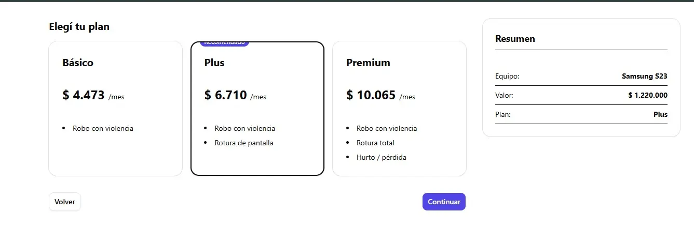
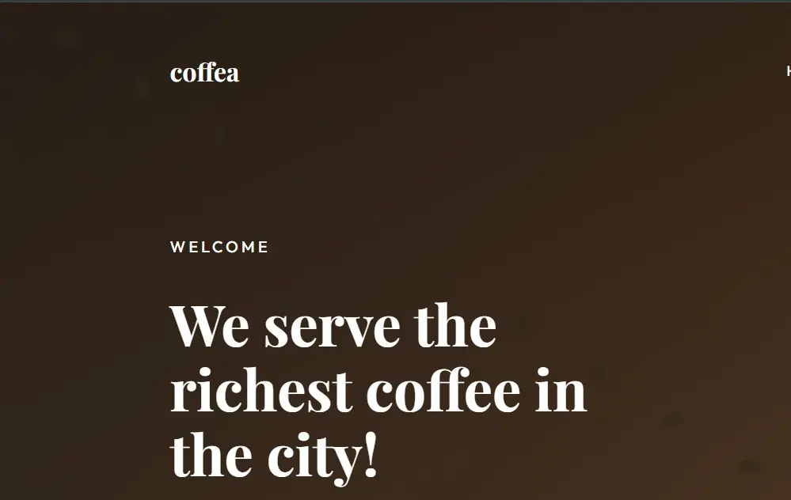

02
Años de estudio
Estudiante de 2° año de la Licenciatura en Sistemas en UADER FCyT, enfocado en el desarrollo web y resolución de problemas.
Años de estudio
Tecnologías base
Proyectos creados
Desarrollo de interfaces accesibles y responsivas.
Lógica de negocio y consumo de APIs.
Versionado y entornos de desarrollo.
Diseño y maquetación de mi portfolio personal enfocado en accesibilidad y performance.
Leer caso de estudio Ver repo
Desarrollo del front-end para el flujo de contratación y checkout de una plataforma de seguros.
Ver repositorio
Maquetación estática de una landing page para una cafetería, desarrollada estrictamente bajo requerimientos de PRD.
Ver repositorioConcordia, Entre Rios
FCyT Concepción del Uruguay (UADER)
Soy un desarrollador en formación, buscando oportunidades donde poder aplicar mis conocimientos y seguir aprendiendo en un ambiente profesional
Actualmente disponible para prácticas profesionales o roles junior en desarrollo.